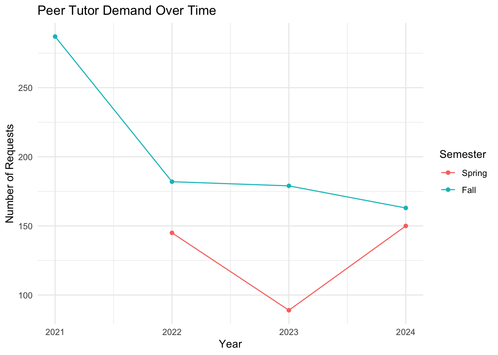
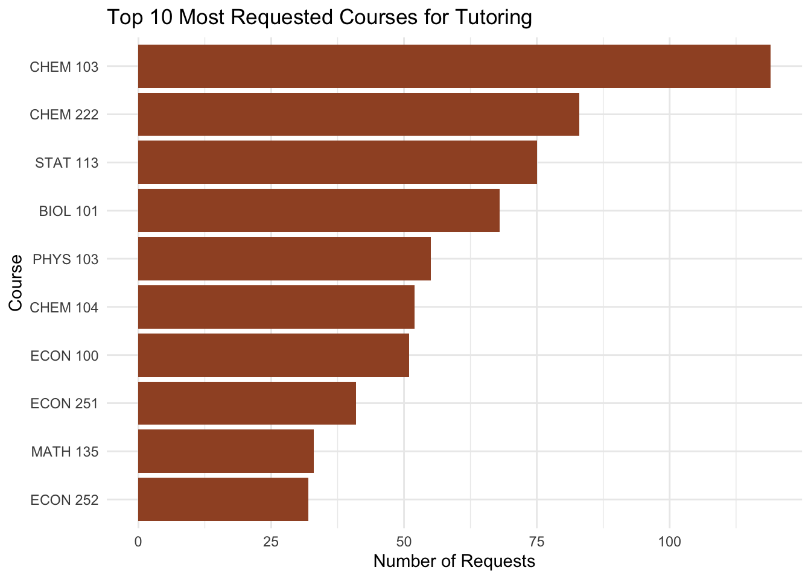
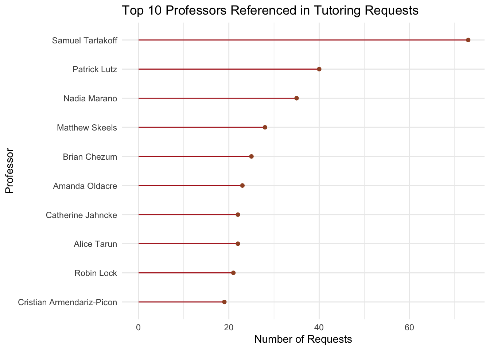

Peer Tutor Demand Patterns at St. Lawrence University (2021-2024)
news
code
analysis
Author
Valeria Escrich
Published
January 28, 2026
Introduction
For this blog post, I analyzed the tutoring requests from the Peer Tutoring Program at St.Lawrence University. The dataset has 1216 observations, each row represents a tutoring request submitted by a student.
The variables include:
submission_date
student_id
subject
professor
notes
semester
The variables I will be using in my exploration re semester, subject, and professor because it will allow us to understand patterns in demand over time and across courses.
This dataset comes from internal program records used to process tutoring requests. Leadership in the Peer Tutoring program transitioned, the historical data has never been analyzed. The prupose of this investigation is getting further understanding of prior patterns in demand so we can make as a team more informed staffing and outreach decisions moving forward.
Question of Interest
How has peer tutoring demand in St.Lawrence University changed from 2021 to 2024, and which courses and academic areas tend to generate the highest tutoring requests?
Understanding the trends will help our program anticipate staffing needs and improve our allocation of resources.
library(tidyverse)
── Attaching core tidyverse packages ──────────────────────── tidyverse 2.0.0 ──
✔ dplyr 1.1.4 ✔ readr 2.1.5
✔ forcats 1.0.0 ✔ stringr 1.5.1
✔ ggplot2 4.0.0 ✔ tibble 3.3.0
✔ lubridate 1.9.4 ✔ tidyr 1.3.1
✔ purrr 1.1.0
── Conflicts ────────────────────────────────────────── tidyverse_conflicts() ──
✖ dplyr::filter() masks stats::filter()
✖ dplyr::lag() masks stats::lag()
ℹ Use the conflicted package (<http://conflicted.r-lib.org/>) to force all conflicts to become errors
library(here)
here() starts at /Users/valeria/Library/CloudStorage/OneDrive-St.LawrenceUniversity/DS334_blog_Valeria
Rows: 1216 Columns: 6
── Column specification ────────────────────────────────────────────────────────
Delimiter: ","
chr (6): X1, X2, X3, X4, X5, X6
ℹ Use `spec()` to retrieve the full column specification for this data.
ℹ Specify the column types or set `show_col_types = FALSE` to quiet this message.
semester_count = request_clean |>group_by(semester)|>summarise(n=n())|>separate(semester, into =c("sem","year"), sep =" ")|>mutate(year =as.integer(year),sem =factor(sem, levels =c("Spring","Fall"))) |>arrange(year, sem)|>filter(!is.na(sem))ggplot(semester_count, aes(x= year, y= n, color = sem, group = sem))+geom_line()+geom_point()+labs(title ="Peer Tutor Demand Over Time",x ="Year",y ="Number of Requests",color ="Semester") +theme_minimal()

This line graph shows the number of tutoring requests by semester from 2021 to 2024, and Spring and Fall semesters visualized separately.
The most evident patters is in the Fall semester consistently generating more tutoring requests than Spring semesters. This shows that tutoring demand is strongly tied to the semester, with Fall being the highest demand semester.
Through the years we can observe how Fall has declined, while Spring demand fluctuates, having a drop 2023 and then increasing in 2024. The main takeaway is at least until 2024, peer tutoring demand is not steadily increasing or decreasing over time, it varies depending on the year nad semester. This suggests that staffing decisions should be based on the semester and yearly behavior.
2. Most Requested Courses for Tutoring
subject_count = request_clean |>group_by(subject) |>summarise(n =n()) |>arrange(desc(n)) |>slice(1:10)ggplot(subject_count, aes(x=reorder(subject,n), y = n))+geom_col(fill ="sienna")+coord_flip()+labs(title ="Top 10 Most Requested Courses for Tutoring",x ="Course",y ="Number of Requests")+theme_minimal()

This bar chart shows the top 10 courses with the highest number of tutoring requests.
The most requested course is CHEM 103: General Chemistry, followed by CHEM 222: Organic Chemistry and STAT 113:A pplied Statistics. Suggesting that introductory courses for a STEM track are the ones with highest tutoring demand. Some others are biology, physics, and economics.
We can conclude that staffing decisions should prioritize in recruiting tutors in intro to chemistry, statistics, biology, physics and economics. If our tutors are not aligned with this demand, students who request help in these courses may face limited access to support.
Beyond staffing, this bar plot informs outreach strategy. Instead of promoting peer tutoring equally across all departments, our program should target the high demand coursed directly.
This plot identifies where students are most actively seeking help, and is an opportunity to use it for recruitments planning and creating outreach strategies.
3. Professors Referenced in Tutoring Requests
# For this section I am using functions from 14.2.3 Subsetting Strings and 12.6 Case Study subsections of the book “R for Data Science”, published January 2017.https://r4ds.had.co.nz/index.html. Went throught the common typos that I was able to identify while observing the data.request_clean2 = request_clean |>filter(!is.na(professor)) |>mutate(professor = stringr::str_to_lower(professor),professor = stringr::str_replace(professor, "dr. ", ""),professor = stringr::str_replace(professor, "dr . ", ""),professor = stringr::str_replace(professor, "prof . ", ""),professor = stringr::str_replace(professor, "dr ", ""),professor = stringr::str_replace(professor, "professor ", ""),professor = stringr::str_replace(professor, "prof ", ""),professor = stringr::str_replace(professor, ",", ""),professor= stringr::str_to_title(professor),professor = stringr::str_replace(professor, "Tartakoff", "Samuel Tartakoff"),professor = stringr::str_replace(professor, "Sam Tartakoff", "Samuel Tartakoff"),professor = stringr::str_replace(professor, "Tartacoff", "Samuel Tartakoff"),professor = stringr::str_replace(professor, "Samuel Samuel Tartakoff", "Samuel Tartakoff"),professor = stringr::str_replace(professor, "^Jahncke$", "Catherine Jahncke"),professor = stringr::str_replace(professor, "Armendariz-Picon", "Cristian Armendariz-Picon"),professor = stringr::str_replace(professor, "Cristian Cristian Armendariz-Picon", "Cristian Armendariz-Picon"),professor = stringr::str_replace(professor, "^Marano$", "Nadia Marano"),professor = stringr::str_replace(professor, "^Lutz$", "Patrick Lutz"),professor = stringr::str_replace(professor, "^Chezum$", "Brian Chezum"),professor = stringr::str_replace(professor, "^Oldacre$", "Amanda Oldacre"),professor = stringr::str_replace(professor, "^Tarun$", "Alice Tarun"),professor = stringr::str_replace(professor, "Patrick Patrick Lutz", "Patrick Lutz"),professor = stringr::str_replace(professor, "^Skeels$", "Matthew Skeels"), )# I used 14.3.2 Anchors from the same book to make sure i dont get repeated names in the same string when trying to fix it. prof_count = request_clean2 |>group_by(professor)|>summarise(n=n())|>arrange(desc(n)) |>slice(1:10)prof_count
# A tibble: 10 × 2
professor n
<chr> <int>
1 Samuel Tartakoff 73
2 Patrick Lutz 40
3 Nadia Marano 35
4 Matthew Skeels 28
5 Brian Chezum 25
6 Amanda Oldacre 23
7 Alice Tarun 22
8 Catherine Jahncke 22
9 Robin Lock 21
10 Cristian Armendariz-Picon 19
ggplot(prof_count, aes(x = n, y =reorder(professor, n))) +geom_segment(aes(x=0, xend = n, yend = professor),color ="firebrick")+geom_point(color ="sienna")+labs(title ="Top 10 Professors Referenced in Tutoring Requests",x ="Number of Requests",y ="Professor")+theme_minimal()

This lollipop plot shows the ten most referenced professors un tutoring requests between 2021 and 2024. Some might have retired.
It is important for me to emphasize that this visualization it is not an evaluation of teaching quality. Professors are referenced because when requesting a tutor they are requested to indicate their professors name. High counts could potentially reflect large enrollment in these specific courses, rigurous content, or strong support of the faculty to our program.
Dr. Samuel Tartakoff appears more frequently, followed by Dr. Patrick Lutz and Dr. Nadia Marano. The distribution is not evenly spread across all instructors, but instead clustered in specific courses.
From the perspective of the Peer Tutoring program, this information is valuable for planning a strategic outreach. Based on this we can reach out this faculty memebers to promote our services, request 10 minutes in their class to do our presentation and introduce our services, coordinate peer tutor drop-in hours based on peak assessment periods or in general promote collaboration between our program and specific departments. Our main goal is to allign our support to the student needs. Based on this plot we can better allocate our tutors, anticipate demand, and build tight connections with faculty memeber in highly requested courses.
Wrap-Up
This analysis shows the trends from 2021 to 2024, like high demand courses and frequently referenced professors. The visualizations expose meaningful patters but there are some limitations.
One of the biggest limitations is data preparation, particularly for professor names. When requesting a peer tutor, students have to manually type the professors name, therefore there are some inconcistencies due to abbreviations, misspellings, and missing elements. Although I tried to clean the most comong variations with string replacements, the counts for professors are not precise or entirely accurate. There may still be uncorrected spelling differences. The last plot should be interpreted as an approximation of demand patterns.
Another limitation is that our data set is only based on request counts only. It does not consider university or course enrollment, or tutor availability during high demand.
Notable Insights
One interesting pattern is the evident drop in Spring 2023 requests compared to Fall 2022 or 2023. This decline might reflect changes in our programs visibility, student behavior, staffing or marketing efforts changed.
Fall demand remains overall higher than Spring through the years. This impacts staffing and outreach.
Future Direction
Some aspects that could strengthen this analysis is compare tutor requests to enrollment size, keep track of the repeated request tracking, use prior semesters to predict future demand and based on it the staffing plans, and compare the demand before and after putting more efforts in outreach initiatives and collaborating with faculties.
Connection to Class Ideas
The chosen visualizations were selected on previous content in our class readings or class code.
First, our line graph for semester demand uses a common scale. We have discussed how the position in our axis helps with accuracy in our perception when it comes to quantitative comparison. The use of color helps distinguish semesters, and we avoid visual clutter.
Second, the horizontal bar chart for top courses uses a common baseline supporting the comparison. Reordering helps guide attention to the most important categories. Flipping coordinates, made the labels more clear and accessible.
Third, the lollipop plot helps reduce ink and still romotes accurate comparison. This goes very in hand to our reading concept of maximizing data-to-ink ratio without sacrificing interpretation.
Across all of our plots we did not have 3D effects, consistent color usage and clear labels.
Overall the Peer Tutoring Program demand follows patterns across semesters and is concentrated in specific handful of challenging courses. Requests have a tendency to be stronger in the Fall and less busy during the Spring, with some changes over time. These trends suggest that the Peer Tutoring Program needs are related to the course structure, providing valuable insights about our plans for staffing and targeted outreach.